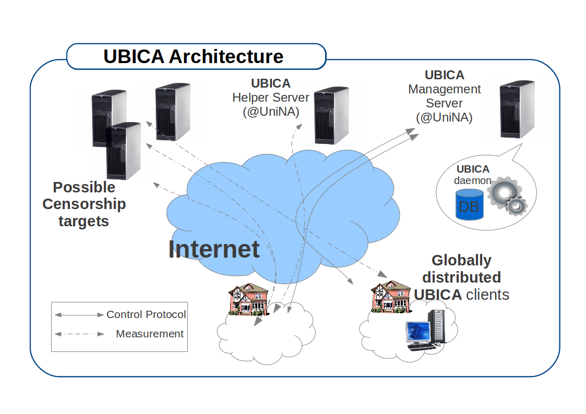

Internet Censorship Detection
With the growing usage of Internet as a tool for spreading news and fostering discussions of any kind, Internet censorship has become more and more a concern and a subject of active research (e.g. see OpenNet Initiative for reports about worldwide internet censorship). Several techniques can be employed by censors to impair or prevent altogether the access to information on the Internet, by acting at different layers (network and transport, or application) and at different control points (the user's machine, the ISP, country border ASes, server side); moreover adopted censoring techniques change on geographic basis and in time.
Measuring the occurrence of this practice and identifying the techniques employed are instrumental to scientifically document the phenomenon, detect possible side-effects affecting entities outside the censored network, raise the awareness of the users, and empower them with respect to political decisions. Also, these research activities provide insights useful for the design of circumvention techniques.
UBICA Project
UBICA (User-based Internet Censorship Analysis) is a research project of University of Napoli "Federico II", led by prof. Antonio Pescapè and partially funded by a Google Faculty Research Award in 2013.
The research project aims at advancing the state of the art in the field of Internet censorship analysis implementing a multi-platform and open-source client (UBICA censorship monitor) to be distributed worldwide in order to perform a number of censorship tests, mainly traffic manipulations and content blocking. The UBICA censorship monitor will leverage a measurement and management infrastructure currently employed by the proposing research team for broadband network performance evaluation on national scale (HoBBIT) to provide easy deployment and update of new censorship tests, keep a low computational footprint on the hosts, and perform integrated analysis of the experimental results. By means of the UBICA censorship monitor we aim at collecting and analyzing (avoiding any concerns about user privacy) heterogeneous and independent data sources related to censors activity. The research project aims to: (i) improve the current state of the art in the field of censorship analysis; (ii) relate Quality of Service parameters, geographical location, and access technologies with the results of censorship tests; (iii) infer possible side-effects that censorship techniques enforced by a government in a country can have on a global scale; (iv) make available both the monitor source code and a set of anonymized collected data related to evidences of censorship.
Architecture
Thanks to a modular client design, new tests are deployed on user permission without reinstalling or even stopping the client, lowering the barrier to the deployment of new detection experiments. All tests perform active measurements, i.e. no information from user activity or user traffic is collected, avoiding possible concerns about user privacy, as the tests use automatically generated traffic to infer possible censorship. Some tests (namely, traffic manipulation ones) employ server-based helper applications: a server counterpart is deployed on the management infrastructure.
In general, the destinations of probe traffic are of three types: (i) Internet services (DNS, open web proxies, TOR relays); (ii) web servers hosting content potentially subject to censorship; (iii) helper measurement servers.
For the tests that check content blocking, the list of potential targets is generated on the management server, using several sources of information, such as the Herdict project, TOR relay lists, open proxy lists, worldwide popular social networking and news lists. The orchestration of the tests, the client update, the distribution of the targets lists as well as the collection and analysis of the results will be done by means of a management infrastructure, based on the HoBBIT project.

People Involved
- Antonio Pescapè (PI)
- Giuseppe Aceto (Postdoc)
Publications
Giuseppe Aceto, Antonio Montieri, Antonio Pescapè "Internet Censorship in Italy: a First Look at 3G/4G Networks" (Abstract) [bibtex], to appear in International Conference on Cryptology and Network Security (CANS), 14-16 November 2016 Milano (Italy)
Giuseppe Aceto, Alessio Botta, Antonio Pescapè, M. Faheem Awan, Tahir Ahmad, and Saad Qaisar "Analyzing Internet Censorship in Pakistan" IEEE 2nd International Forum on Research and Technologies for Society and Industry Leveraging a better tomorrow (RTSI), September 2016, Bologna, Italy. [bibtex entry]
Shan Huang, Giuseppe Aceto, Felix Cuadrado, Steve Uhlig, Antonio Pescapè "Detecting Middlebox Interference on Applications" (Abstract), ACM CoNEXT, Heidelberg, Dec 1-4 2015.
Giuseppe Aceto, Alessio Botta, Antonio Pescapè, Nick Feamster, Tahir Ahmad, and Saad Qaisar "Monitoring Internet Censorship with UBICA" 7th International Workshop on Traffic Monitoring and Analysis (TMA'15) Barcelona (Spain), April 2015.
Giuseppe Aceto, Antonio Pescapè, "Internet Censorship Detection: A Survey", Computer Networks (2015)
Giuseppe Aceto, Nick Feamster, Antonio Pescapè "User-side approach for censorship detection: home-router and client-based platforms" (Abstract), Connaught Summer Institute on Monitoring Internet Openness and Rights, University of Toronto July 22-26, 2013
Events
May 2013
ETIC AICA & Rotary International Prize awarded to Giuseppe Aceto for his PhD Thesis entitled ''Monitoring Internet censorship: the case of UBICA'' (Announcement - in Italian).
February 2013
Google Faculty Award granted to Antonio Pescapè for the UBICA (User-Based Internet Censorship Analysis) research project.
April 30 2013
Test run of Alpha version of client
May 2013
Press release by Il Denaro
May 2013
UBICA has been press released by Unina News
June 2013
Presentation at the technical meetings of NaLUG
June 11 2013
Prototype of UBICA website with main reports (using mock data)
June 20 2013
Test run of Beta version of client
July 17 2013
Online meeting with researchers from NUST School of Electrical Engineering & Computer Science, Pakistan and Georgia Technology Institute, GA, USA about censorship tests in Pakistan.
July 22-26, 2013
Poster presentation at University of Toronto, Connaught Summer Institute on Monitoring Internet Openness and Rights.
Meetings with researchers, hacktivists and journalists involved in Internet Censorship.
August 5 2013
Online meeting with M-lab people to explore integration of UBICA in m-lab experiments
September 9 2013
Online meeting with OONI developers and M-lab people on m-lab deployment of censorship measurements
October 7 2013
Exposition of UBICA poster at 2nd IEEE International Workshop M&N 2013
October 14 2013
Talk "Router-based and client-based platforms for performance measurement and censorship detection" at the IRTF Network Management Research Group meeting (Zurich, Switzerland)
October 26 2013
Talk at the Linux Day 2013 in Napoli (in Italian), about Internet Censorship and its monitoring (slides, in English) and the UBICA project (slides, in English).
July 28-31, 2014
Participation to Citizen Lab Summer Institute on Monitoring Internet Openness and Rights, at University of Toronto.
March 16, 2015
Published and available online survey paper Internet Censorship detection: A survey focused on detection techniques and platforms.
April 24, 2015
Paper presentation at Universitat Politecnica de Cataunya, Barcelona (Spain) for the 7th International Workshop on Traffic Monitoring and Analysis (TMA'15)
December 4, 2015
Poster presentation at ACM CoNEXT Conference, Heidelberg
September, 2016
Paper presentation at IEEE 2nd International Forum on Research and Technologies for Society and Industry Leveraging a better tomorrow (RTSI), Bologna, Italy.
Related Projects
BISMark: the Broadband Internet Service Benchmark (http://projectbismark.net/)
HoBBIT: Host Based Broadband Internet Telemetry (http://hobbit.comics.unina.it )
M-Lab: an open platform for researchers to deploy Internet measurement tools (http://measurementlab.net/ )
PlanetLab: An open platform for developing, deploying, and accessing planetary-scale services (http://planet-lab.org).
Tor: Anonymity online (http://torproject.org)
Open Observatory of Network Interference (https://ooni.torproject.org/)
HerdictWeb: Help spot Web blockages (http://www.herdict.org/)